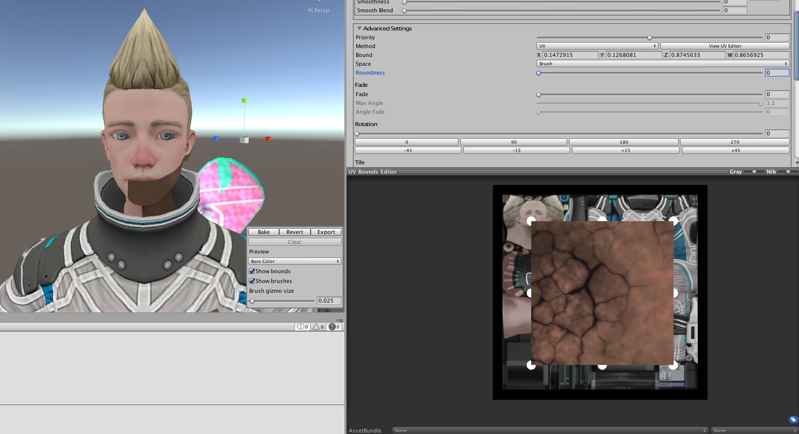
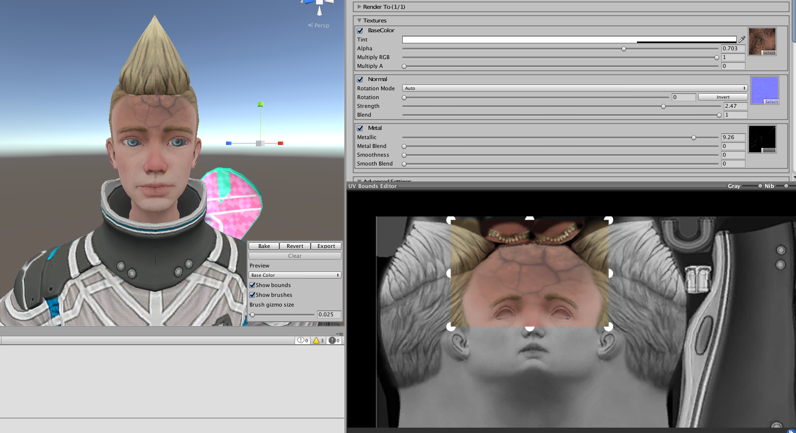

Projection Method
The projection method works the way a projector or directional light might, you point in the direction you want, adjust the size, and depth.
UV Method
Aside from the default projection method, Brushes can be positioned by a UV boundary instead.
In the Brushes Advanced Settings, set Method to UV. The UVBounds editor should appear at the bottom of the inspector. If not click View UV Editor or make sure it isn't minimized.

Top Sliders
- Gray: Renders the area out of bounds as dark gray, so it's easier to see the region.
- Nib: Edge nib size. Larger = easier to grab, smaller = easier to see what your doing.
Controls
- Mouse Wheel Click: Grab the workspace.
- Mouse Wheel Zoom: Zoom in and out.
- Left Click: Grab an edge nib or the full bounds.
- Mouse Move: Move the workspace or edge nib.
Some Brush settings will be disabled but most wont be. The rotation and warp effects are especially useful when working with the UV method. 